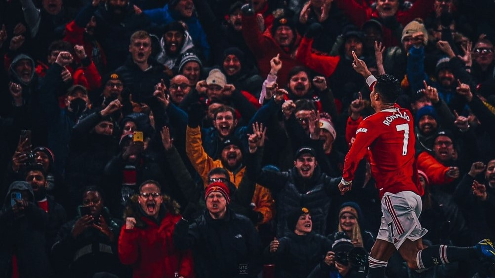
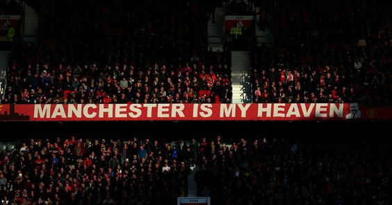
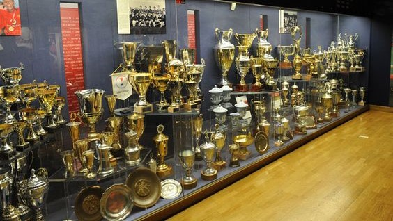

About

Manchester United Football Club adalah sebuah klub sepak bola
profesional yang berbasis di Old Trafford, Manchester Raya, yang
bermain di Liga Utama Inggris dengan gelar Liga Utama Inggris
terbanyak sepanjang masa. Didirikan sebagai Newton Heath LYR
Football Club pada tahun 1878, klub ini berganti nama menjadi
Manchester United pada 1902 dan pindah ke Old Trafford pada tahun
1910.
Manchester United adalah klub sepak bola terkaya ketiga di
dunia untuk 2011–12 dalam hal pendapatan, dengan pendapatan tahunan
sebesar €395.9 juta, dan kedua klub paling berharga tahun 2013,
senilai $3.165 miliar. Pada bulan Januari 2015 lalu, Manchester
United dinobatkan sebagai klub terkaya kedua di dunia, Ini adalah
salah satu tim sepak bola yang paling banyak didukung di
dunia.Setelah sahamnya tercatat di London Stock Exchange pada tahun
1991, klub itu dibeli oleh Malcolm Glazer pada Mei 2005 di
kesepakatan menilai klub di hampir £800 juta. Pada bulan Agustus
2012, Manchester United melakukan penawaran umum perdana di Bursa
Efek New York.
History

Didirikan pada tahun 1878 sebagai klub sepakbola newton heath l&yr,
klub kami telah beroperasi selama lebih dari 140 tahun. Tim pertama
masuk divisi pertama inggris, lalu liga tertinggi sepakbola inggris,
untuk awal musim 1892-93. Nama klub kami berubah menjadi klub
sepakbola manchester united pada tahun 1902, dan kami memenangkan
gelar pertama dari 20 gelar liga inggris pada tahun 1908. Tahun
1910, kami pindah ke trafford lama, stadium kami saat ini.
Stadion Old Trafford kami, yang biasa dikenal dengan "The Theatre of
Dreams", pertama kali dibuka pada 19 Februari 1910 dengan kapasitas
sekitar 80.000 orang. Selama Perang Dunia Kedua, Old Trafford
digunakan oleh militer sebagai depo, dan pada 11 Maret 1941 rusak
berat akibat serangan bom Jerman. Stadion ini dibangun kembali
setelah perang dan dibuka kembali pada tanggal 24 Agustus 1949.
Penambahan lampu sorot, yang memungkinkan pertandingan malam,
selesai pada tahun 1957 dan proyek untuk menutupi tribun dengan atap
selesai pada tahun 1959. Setelah serangkaian penambahan selama tahun
1960-an Pada tahun 1970-an dan awal 1980-an, kapasitas di Old
Trafford mencapai 56.385 pada tahun 1985. Konversi stadion menjadi
stadion dengan semua tempat duduk mengurangi kapasitas menjadi
sekitar 44.000 pada tahun 1992, terendah dalam sejarahnya. Setelah
itu, kami mulai meningkatkan kapasitas di seluruh stadion, sehingga
kapasitas menjadi sekitar 58.000 pada tahun 1996, sekitar 68.000
pada tahun 2000, dan sekitar 76.000 pada tahun 2006. Kapasitas saat
ini di Old Trafford adalah 75.454.
Achievement

Di dalam negeri, Manchester United telah memenangkan rekor 20 gelar
liga papan atas , 13 Piala FA , 6 Piala Liga , dan rekor 21
Community Shield FA . Selain itu, dalam sepak bola internasional,
mereka telah memenangkan Piala Eropa/Liga Champions UEFA tiga kali,
dan Liga Eropa UEFA , Piala Winners UEFA , Piala Super UEFA , Piala
Interkontinental , dan Piala Dunia Antarklub FIFA masing-masing satu
kali. Pada tahun 1968, di bawah manajemen Matt Busby , 10 tahun
setelah delapan pemain klub tewas dalam bencana udara Munich ,
mereka menjadi klub Inggris pertama yang memenangkan Piala Eropa.
Sir Alex Ferguson adalah manajer klub yang paling lama menjabat dan
paling sukses, memenangkan 38 trofi, termasuk 13 gelar liga, lima
Piala FA, dan dua gelar Liga Champions antara tahun 1986 dan 2013.
Pada musim 1998-99 , di bawah kepemimpinan Ferguson, klub ini
menjadi klub pertama dalam sejarah sepak bola Inggris yang meraih
treble kontinental Liga Utama Inggris, Piala FA, dan Liga Champions
UEFA. Dalam memenangkan Liga Eropa UEFA di bawah asuhan José
Mourinho pada 2016-17 , mereka menjadi salah satu dari lima klub
yang memenangkan tiga kompetisi klub utama UEFA (Liga Champions,
Liga Europa, dan Piala Winners). Mereka telah memenangkan Liga
Premier tiga tahun berturut-turut sebanyak dua kali; selama 21 tahun
pertama Liga Premier mereka berada di posisi pertama, kedua atau
ketiga.